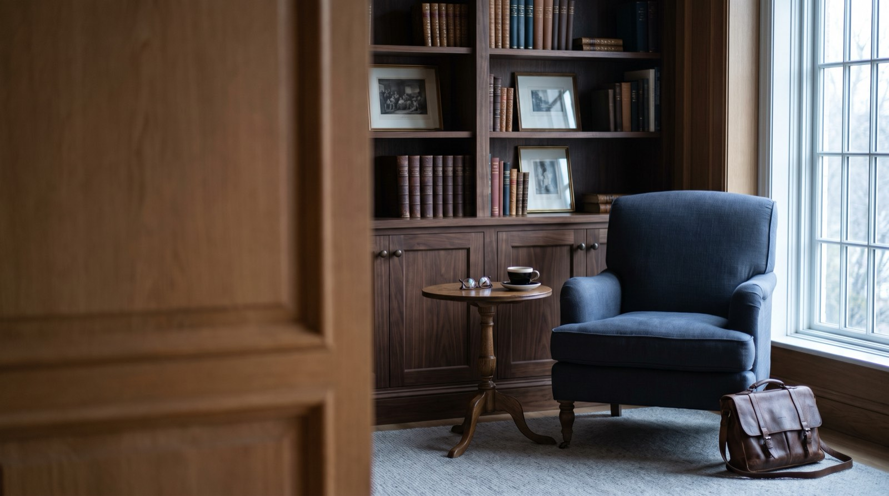

Fee-only fiduciary advice for a deliberately small number of families and business owners. Sixty-one households today, and a waiting list rather than a bigger client roster.
Fee-only. Fiduciary. Fee schedule published. No products sold, ever.

Planning first. Investment management matters, but it is rarely the thing that changes an outcome.
Cash flow, tax, insurance and estate structure, reviewed annually. The plan is the product; the portfolio implements it.
Low-cost, globally diversified and tax-aware. We do not attempt to time markets and we will tell you why.
Concentrated position planning, sale structuring and what happens to a family the year after a liquidity event.
We meet your adult children at no additional cost. Most families lose their adviser at inheritance; that is a failure of relationship, not returns.
Our previous adviser was our parents' adviser and never once spoke to us directly. Ostrander met the four of us in the first month and the conversation was completely different.
The Aldridge family · Clients since 2019
Three conversations before anyone signs anything, and no cost until you decide to proceed.
Half an hour, no cost, no preparation needed. Mostly us listening and you deciding whether you like us.
We gather everything and analyse it properly — tax returns, statements, insurance, estate documents — over two to three weeks. That pace is only possible because we take on few families.
Presented in full, in plain English, including what we think you're doing wrong. You take it away whether or not you engage us.
Quarterly reviews, annual deep planning, and access between times without watching a clock.
A second opinion costs nothing and takes about an hour. Half the people who come for one go back to their existing adviser reassured, and that is a fine outcome.
Fee-only. Fiduciary. Fee schedule published. No products sold, ever.